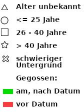

Das zugrunde liegende Baumkataster der Stadt Köln ist ein freier Datensatz (CC BY 3.0 DE) vom Juni 2020. Leider ist der Bestand nicht komplett und wichtige Informationen wie etwa das Alter fehlen zum größten Teil. Eine crowdbasierte Pflegeanwendung ist in Arbeit. Der Datensatz der Stadt wurde durch Vorhersagealgorithmen veredelt, welche das Alter und die Art anhand vorhandener Daten abschätzen: https://github.com/zushicat/cologne-trees-REST-API
Die Webanwendung wurde inspiriert von www.GiessDenKiez.de, wovon Teile im folgenden übernommen, und für Kölle angepasst wurden.
Die Folgen des Klimawandels, insbesondere die trockenen und heißen Sommer, belasten das Ökosystem. Unsere Stadtbäume vertrocknen und tragen langfristige Schäden davon: In den letzten Jahren mussten immer mehr Bäume gefällt werden und ihre Lebensdauer sinkt. Inzwischen wird die Bevölkerung regelmäßig zur Unterstützung aufgerufen, allerdings weitgehend unkoordiniert. Dies möchten wir ändern und mit diesem Projekt eine koordinierte Bürger*innenbeteiligung bei der Bewässerung städtischen Grüns ermöglichen.

Quelle: DWD - Wetterstation Köln-Bonn. Monatliche Niederschläge im Vergeleich mit dem Referenzzeitraum 1981 - 2010.
Aus der Abbildung oben läßt sich gut erkennen, dass sich das Klima gewandelt hat. Von den typischen Sommerregenbieten (Hauptniederschläge im Sommer) hin zu Winterregengebieten. Dadurch steht den Pflanzen während der Vegetationsperiode nicht mehr genug Wasser zur Verfügung.Je nach Alter, Standort und Baumart benötigen die Bäume unterschiedlich viel zusätzliches Wasser. Jungbäume (0-15 Jahre), benötigen mehr Wasser als mittelalte Bäume (15-40 Jahre). Altbäume (ab 40 Jahre) sind meist komplette Selbstversorger. Die Bäume werden üblicherweise bei einem Alter von 10 Jahren gepflanzt. Diese werden in der Regel noch 6 weitere Jahre mit Wasser versorgt (Stand 2020). Das ungefähre Alter der Bäume (falls vorhanden) kannst Du an den entsprechenden Symbolen in der Darstellung ablesen. Besonders über Wasser freuen sich jüngere Bäume mit einem Stammumfang von bis zu 40 Zentimeter (gemessen in einem bis anderthalb Meter Höhe), was einem Alter von ca. 25 Jahren entspricht. Und selbstverständlich Bäume auf schwierigen Untergründen, wie auf Tiefgaragen, auf Stadtbahntunnel oder in Pflanztrögen.
Im Wurzelbereich (Baumscheibe) dürfen keine Grabarbeiten durchgeführt, und kein Erdreich aufgetragen werden.
Das Gießen des Wassers in die Belüftungsrohre ist bei jüngeren Bäumen nicht sinnvoll, da das Wasser i.d.R. zu großen Teilen in den tieferen Schichten des Bodens versickert.
Am einfachsten wird mit einem Eimer Wasser aus geringer Höhe vorsichtig direkt an den Baum gegossen.
Sofern die Baumscheibe keine ausreichende Kapazität hat, langsam vorgehen, oder mehrmals gießen.
Einmalige große Wassermengen haben einen positiveren Effekt als häufige kleine Mengen, da die Verluste durch die Oberflächenverdunstung minimiert werden, und die Durchwurzelung tieferer Bodenschichten gefördert wird.
Bewährt haben sich Wassersäcke (s.u.), oder ganz einfach Bottiche mit Löchern unten drin, um das Wasser langsam in den Boden versickern zu lassen.
Die Stadt Köln hat zum Thema eine Informatiosnseite eingerichtet: Trockenheit - Kräfte bündeln für die Kölner Bäume
Durch das Anklicken oder Antippen eines Baumes öffnen sich die Detailinformationen zu dem Baum:
Dort hast Du auch die Möglichkeit durch den Button "Ich habe den Baum heute gegossen" Deinen Nachbar*innen dies mitzuteilen.
Bitte wähle die gegossene Wassermenge zuvor über die Auswahlliste aus:
Deine eingegebenen Daten stehen dann, wie das Baumkataster der Stadt, unter der CC BY 3.0 DE Lizenz.
Sobald der Baum erfolgreich via dem Button "Ich habe den Baum heute gegossen" virtuell gegossen wurde, hast Du die Möglichkeit dies in den Sozialen Netzwerken zu teilen.

Der Link öffnet dann die Karte mit dem Baum den Du gegossen hast.
Durch ein Anklicken des Augensymbols in der linken oberen Ecke der Bedienwerkzeuge lassen sich diese weg schalten, um auch bei mobilen Endgeräten genug Platz für die Kartendarstellung zu haben:

Informationen zum Alter der Bäume (falls vorhanden) können Anhand der Symbole in der Legende entnommen werden:
Mit dem darunter liegenden Werkzeug kann das gewünschte Datum ausgewählt werden.
Bäume die an diesem Datum (oder danach) gegossen wurden, werden in Grün dargestellt. Alles davor in Rot. Regenfälle werden dabei nicht berücksichtigt.
Google Play, Appstore & Co sind nicht notwendig um eine Webseite über ein Icon auf Eurem Mobilgerät zur Verfügung zu stellen. Eine gute & aktuelle Anleitung gibt es auf blog.lineupr.com.
CodeForCologne oder OK Lab Köln ist eine regionale Gruppe von Designern, Entwicklerinnen, Journalisten und Anderen, die sich regelmäßig treffen, um an nützlichen Anwendungen rund um Offene Daten zu arbeiten. Unser Treffen findet alle zwei Wochen statt. Schaut einfach in unserer gettogether.community Gruppe vorbei!

Die Daten von 6/2020 stammen vom Baumkataster der Stadt Köln und stehen unter offenedaten-koeln.de zum Download bereit (CC BY 3.0 DE).
Verantwortlich für diesen Webauftritt ist:
Martin Over,
c/o OK Lab Köln,
Hackländerstraße 2,
50825 Köln,
contact(at)OpenDEMData.info
Die Inhalte unserer Seiten wurden mit größter Sorgfalt erstellt. Für die Richtigkeit, Vollständigkeit und Aktualität der Inhalte können wir jedoch keine Gewähr übernehmen. Als Diensteanbieter sind wir gemäß § 7 Abs.1 TMG für eigene Inhalte auf diesen Seiten nach den allgemeinen Gesetzen verantwortlich. Nach § 8 bis 10 TMG sind wir als Diensteanbieter jedoch nicht verpflichtet, übermittelte oder gespeicherte fremde Informationen zu überwachen oder nach Umständen zu forschen, die auf eine rechtswidrige Tätigkeit hinweisen. Verpflichtungen zur Entfernung oder Sperrung der Nutzung von Informationen nach den allgemeinen Gesetzen bleiben hiervon unberührt. Eine diesbezügliche Haftung ist jedoch erst ab dem Zeitpunkt der Kenntnis einer konkreten Rechtsverletzung möglich. Bei Bekanntwerden von entsprechenden Rechtsverletzungen werden wir diese Inhalte umgehend entfernen.
Unser Angebot enthält Links zu externen Webseiten Dritter, auf deren Inhalte wir keinen Einfluss haben. Deshalb können wir für diese fremden Inhalte auch keine Gewähr übernehmen. Für die Inhalte der verlinkten Seiten ist stets der jeweilige Anbieter oder Betreiber der Seiten verantwortlich. Die verlinkten Seiten wurden zum Zeitpunkt der Verlinkung auf mögliche Rechtsverstöße überprüft. Rechtswidrige Inhalte waren zum Zeitpunkt der Verlinkung nicht erkennbar. Eine permanente inhaltliche Kontrolle der verlinkten Seiten ist jedoch ohne konkrete Anhaltspunkte
Bei jedem Zugriff auf Inhalte des Internetangebotes werden dort vorübergehend Daten über sogenannte Protokoll- oder Log-Dateien gespeichert, die möglicherweise eine Identifizierung zulassen. Die folgenden Daten werden hierbei erhoben:
Rechtsgrundlage für die vorübergehende Speicherung der Daten ist Art. 6 Abs. 1 lit. e DS-GVO i.V.m. § 3 Abs. 1 NRWDSAnpUG-EU.
Die Daten aus den Protokoll- bzw. Logdateien dienen zur Sicherstellung der Funktionsfähigkeit der Website. Zudem dienen sie zur Abwehr und Analyse von Angriffen. In diesen Zwecken liegt auch unser berechtigtes Interesse an der Datenverarbeitung.
Die Daten werden bis zu einer Woche direkt und ausschließlich für Administratoren zugänglich aufbewahrt. Mit dem Hoster des Serverswurde ein entsprechender Vertrag zur Auftragsverarbeitung (AVV) geschlossen. Es handelt sich um einen deutschen Serverstandort
Die hier gezeigten Hintergrundkarten kommen von:
www.openstreetmap.orgDas Augen Icon für die Werkzeuge wurde erstellt von: SVG Repo - Creative Commons BY 4.0
Das WhatsApp Icon stammt von: Wikimedia Bitte die Lizenzbedingungen beachten
Das Facebook Icon stammt von: Wikipedia Bitte die Lizenzbedingungen beachten
Das Twitter Icon stammt von: Wikipedia Bitte die Lizenzbedingungen beachten
Das Weltkugel Loading Icon wurde erstellt von: loading.io Bitte die Lizenzbedingungen beachten
Das Gießkannen Favicon & Icon wurde erstellt von: freefavicon.com Bitte die Lizenzbedingungen beachten
Das #GießtKoelle Logo hat ein Copyright
{kind=link}
{kind=link}
{kind=link}